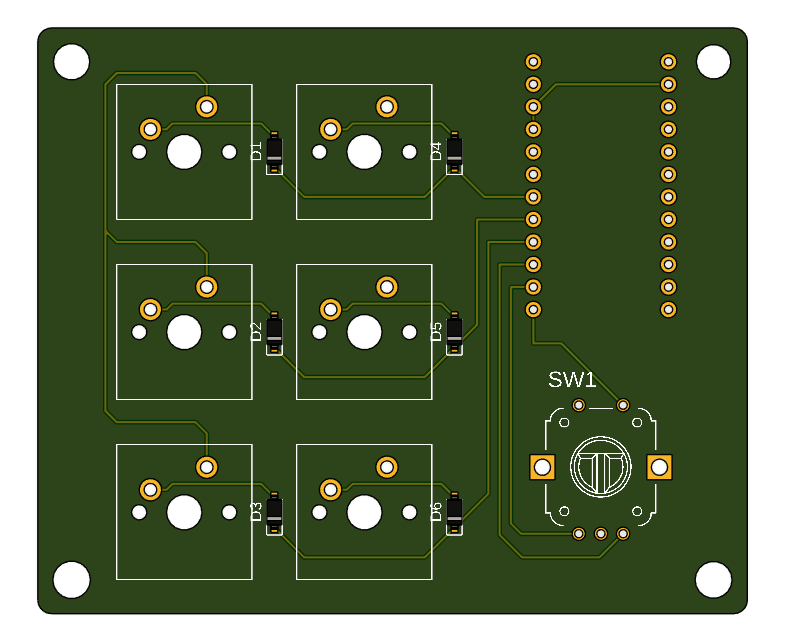
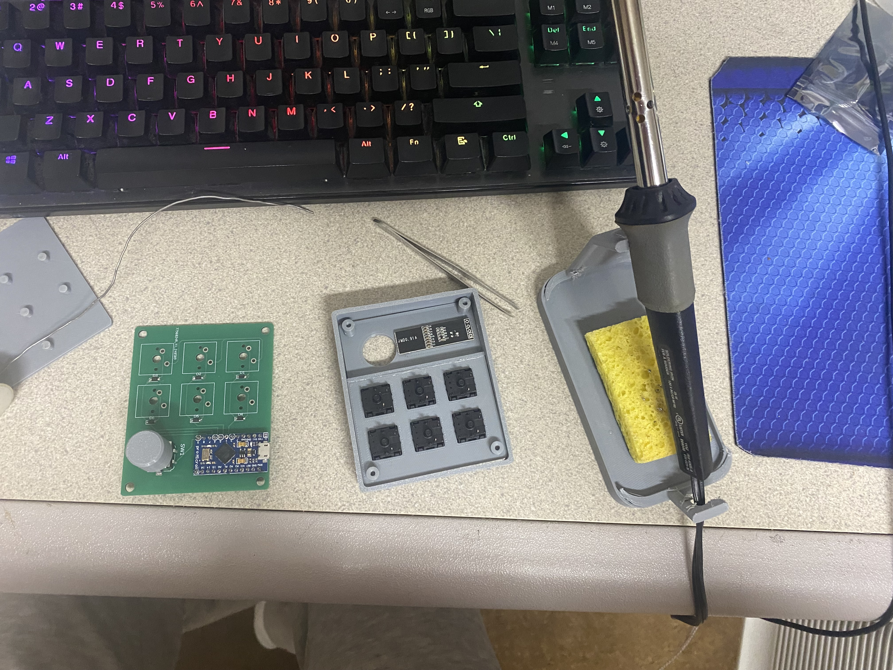

Custom Macro Keypad With Knob

The motivation behind this project was to create a custom macro keypad that would help me with my productivity. While working I often listen to music and find it very annoying to hold down the function key to use the media keys on my keyboard to change the song. I wanted to create a keypad that would allow me to control my music in an intuitive way and also have the ability to program the keys to do other tasks. The dial would be used to change the volume and the screen would be used to display what the current mode is.
To accomplish this I needed to learn Fusion 360 to design the parts and then 3D print them. I also needed to learn how to program an Arduino to act as a usb keyboard device and to set the keys, and dial to do the desired tasks. I also had to learn Eagle to design the custom PCB for the keypad to avoid hardwiring the connections.
The final product features 6 custom programmable keys, however by holding down the encoder button you can change presets that allows for another set of 6 keys to be programmed. This allows for a total of 36 programmable keys in total which is more than enough for my needs. The knob is being used to control the volume and the OLED screen displays the current mode.
The design process was relatively straightforward for this project. I started by reading a ton of online forums like Reddit to find information about designing a custom keyboard PCB as well as watching a lot of YouTube videos. I then used Eagle to design the PCB and then exported the gerber files to send to a PCB manufacturer.
Custom PCB schematic diagram
Custom PCB CAD in Fusion 360
I then designed the case in Fusion 360 and 3D printed it. I used a rotary encoder for the dial and Cherry MX switches for the keys. I also included a mini OLED display that I found on Amazon to display the mode and make the overall device feel more complete. I then soldered all the components onto the PCB and began to assemble the device.
The CAD of the Keypad in Fusion 360
Assembling the Keypad
Lastly, I programmed the Arduino to act as a USB keyboard using the Arduino IDE and to set the keys and dial to do the desired tasks by using a helpful guide by "tinyboatproductions" on instructables. His guide can be found here. The final product is shown below.
Complete functioning Macropad
This project was a great learning experience for me as I was able to learn how to design a custom PCB, design a case in Fusion 360, and program an Arduino to act as a USB keyboard. I also learned how to solder components onto a PCB and how to assemble a device. I use this device everyday and it has helped me with my productivity and I am very proud of the final product.